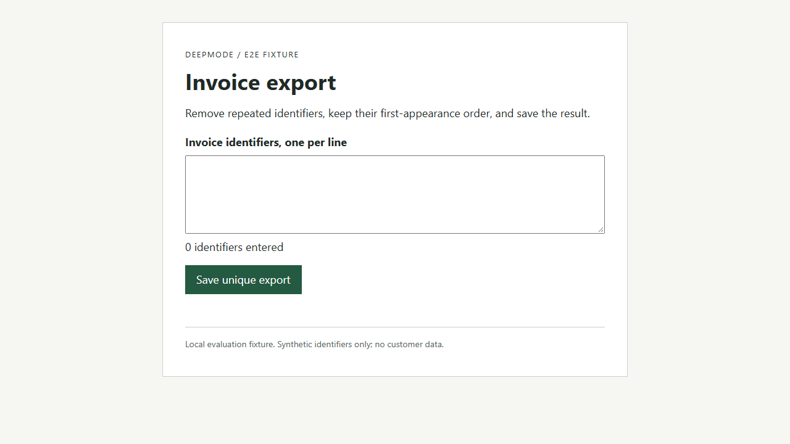
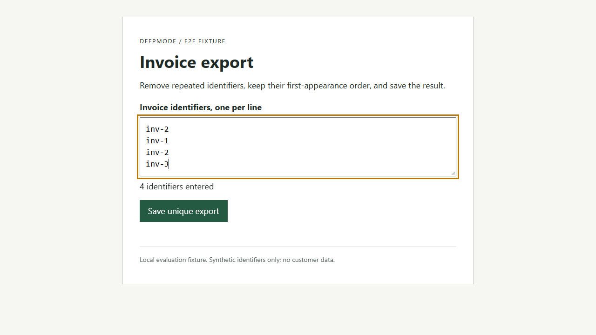
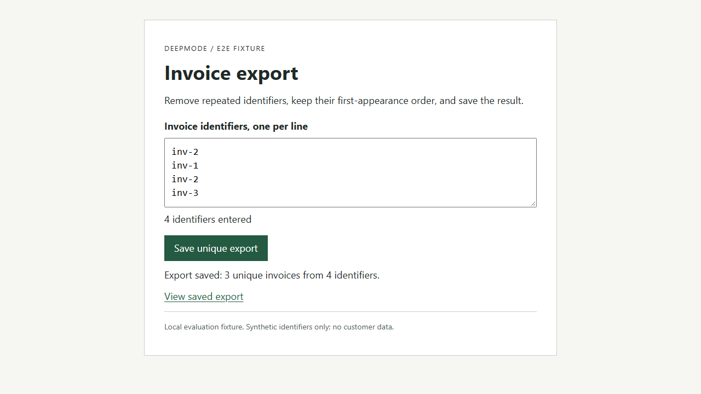
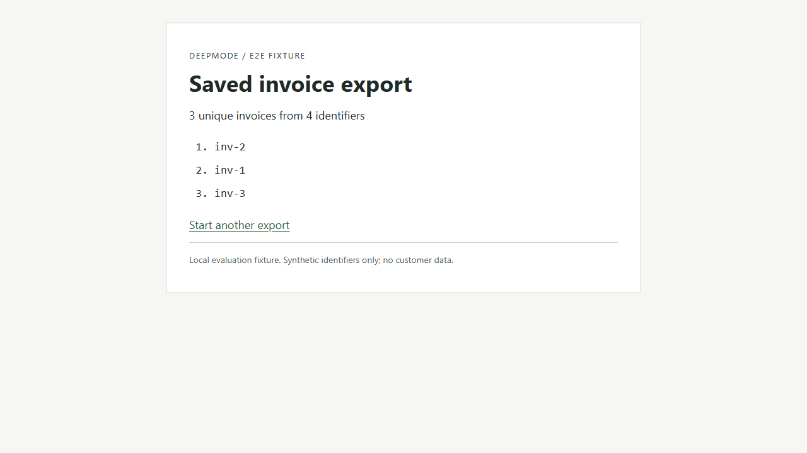
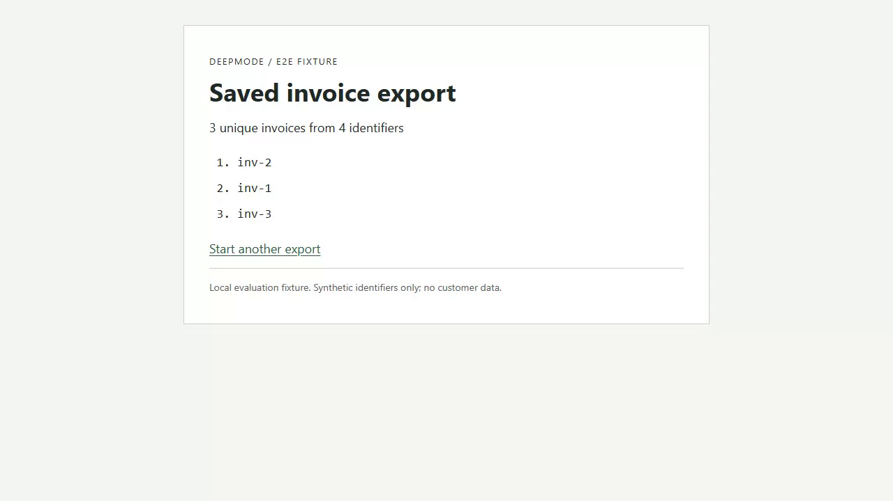

Recorded workflow evidence
This is an index of recorder observations, not a prospective design, independent acceptance, or proof that Penpot imported anything.
Recorder state: passed
Source bundle SHA-256: c2393e388b486d7fa266158f5b583c12ae07dc886a354b2e1aa624bc88d24fb7
Original user intent
Evaluation pilot, not a production invoice feature: enter repeated synthetic invoice identifiers, save each identifier once in first-appearance order, open the persisted export, and reopen it to verify the saved result. Prove the browser-to-HTTP-to-SQLite-to-readback journey with every step visible. This bounded pilot verifies Deepmode recording and replay, not the user's entire broader Deepmode improvement request.
Editable SVG | Mermaid source | Export provenance and hashes
Capture limitations
["Uniform timeline frames are samples, not continuous semantic video understanding.", "Only one pinned tab is recorded; popup and tab transitions fail rather than imply coverage.", "Browser allowlist is domain-based, not a firewall; top-level exact origins are checked after steps.", "No source/application revision is inferred from recorder provenance.", "Hashes detect changed artifacts relative to the seal, not forgery by someone who can rewrite the entire bundle.", "Actual Chrome version is not exposed by this command contract."]
Frame sampling
{"coverage": "complete", "duration_ms": 1600, "interval_ms": 1000, "max_frames": 8, "method": "uniform"}
Recorded video
Original video bytes
1. open-export (passed)
Operator action
{"type": "open", "url": "http://127.0.0.1:18991/"}
Operator expectation
{"state": [{"equals": true, "property": "visible", "selector": "#invoice-ids"}], "text": [{"equals": "Invoice export", "selector": "h1"}]}
Actual recorder observations
{"assertions": [{"actual": "Invoice export", "expected": {"equals": "Invoice export", "kind": "text", "selector": "h1"}, "passed": true}, {"actual": true, "expected": {"equals": true, "kind": "state", "property": "visible", "selector": "#invoice-ids"}, "passed": true}], "errors": [], "target_id": "4D1E2C55F1C8C16FD3D19998E279BFEF", "url": "http://127.0.0.1:18991/"}
Recorded interval: 907 to 1162 ms.

Recorded textual snapshot
2. enter-repeated-identifiers (passed)
Operator action
{"selector": "#invoice-ids", "text": "inv-2\ninv-1\ninv-2\ninv-3", "type": "fill"}
Operator expectation
{"text": [{"equals": "4 identifiers entered", "selector": "#input-status"}]}
Actual recorder observations
{"assertions": [{"actual": "4 identifiers entered", "expected": {"equals": "4 identifiers entered", "kind": "text", "selector": "#input-status"}, "passed": true}], "errors": [], "target_id": "4D1E2C55F1C8C16FD3D19998E279BFEF", "url": "http://127.0.0.1:18991/"}
Recorded interval: 1162 to 1360 ms.

Recorded textual snapshot
3. submit-export (passed)
Operator action
{"selector": "#export", "type": "click"}
Operator expectation
{"state": [{"equals": true, "property": "visible", "selector": "#export"}]}
Actual recorder observations
{"assertions": [{"actual": true, "expected": {"equals": true, "kind": "state", "property": "visible", "selector": "#export"}, "passed": true}], "errors": [], "target_id": "4D1E2C55F1C8C16FD3D19998E279BFEF", "url": "http://127.0.0.1:18991/"}
Recorded interval: 1360 to 1558 ms.

Recorded textual snapshot
4. await-persisted-result (passed)
Operator action
{"selector": "#view-export", "type": "wait"}
Operator expectation
{"state": [{"equals": true, "property": "visible", "selector": "#view-export"}], "text": [{"equals": "Export saved: 3 unique invoices from 4 identifiers.", "selector": "#summary"}]}
Actual recorder observations
{"assertions": [{"actual": "Export saved: 3 unique invoices from 4 identifiers.", "expected": {"equals": "Export saved: 3 unique invoices from 4 identifiers.", "kind": "text", "selector": "#summary"}, "passed": true}, {"actual": true, "expected": {"equals": true, "kind": "state", "property": "visible", "selector": "#view-export"}, "passed": true}], "errors": [], "target_id": "4D1E2C55F1C8C16FD3D19998E279BFEF", "url": "http://127.0.0.1:18991/"}
Recorded interval: 1558 to 1763 ms.
Recorded textual snapshot
5. open-saved-export (passed)
Operator action
{"selector": "#view-export", "type": "click"}
Operator expectation
{"text": [{"equals": "Saved invoice export", "selector": "h1"}, {"equals": "3 unique invoices from 4 identifiers", "selector": "#saved-count"}, {"equals": "inv-2", "selector": "#invoice-list li:nth-child(1)"}, {"equals": "inv-1", "selector": "#invoice-list li:nth-child(2)"}, {"equals": "inv-3", "selector": "#invoice-list li:nth-child(3)"}], "url": "http://127.0.0.1:18991/saved"}
Actual recorder observations
{"assertions": [{"actual": "http://127.0.0.1:18991/saved", "expected": {"equals": "http://127.0.0.1:18991/saved", "kind": "url"}, "passed": true}, {"actual": "Saved invoice export", "expected": {"equals": "Saved invoice export", "kind": "text", "selector": "h1"}, "passed": true}, {"actual": "3 unique invoices from 4 identifiers", "expected": {"equals": "3 unique invoices from 4 identifiers", "kind": "text", "selector": "#saved-count"}, "passed": true}, {"actual": "inv-2", "expected": {"equals": "inv-2", "kind": "text", "selector": "#invoice-list li:nth-child(1)"}, "passed": true}, {"actual": "inv-1", "expected": {"equals": "inv-1", "kind": "text", "selector": "#invoice-list li:nth-child(2)"}, "passed": true}, {"actual": "inv-3", "expected": {"equals": "inv-3", "kind": "text", "selector": "#invoice-list li:nth-child(3)"}, "passed": true}], "errors": [], "target_id": "4D1E2C55F1C8C16FD3D19998E279BFEF", "url": "http://127.0.0.1:18991/saved"}
Recorded interval: 1763 to 2033 ms.

Recorded textual snapshot
6. reopen-persisted-export (passed)
Operator action
{"type": "open", "url": "http://127.0.0.1:18991/saved"}
Operator expectation
{"text": [{"equals": "Saved invoice export", "selector": "h1"}, {"equals": "3 unique invoices from 4 identifiers", "selector": "#saved-count"}, {"equals": "inv-2", "selector": "#invoice-list li:nth-child(1)"}, {"equals": "inv-1", "selector": "#invoice-list li:nth-child(2)"}, {"equals": "inv-3", "selector": "#invoice-list li:nth-child(3)"}]}
Actual recorder observations
{"assertions": [{"actual": "Saved invoice export", "expected": {"equals": "Saved invoice export", "kind": "text", "selector": "h1"}, "passed": true}, {"actual": "3 unique invoices from 4 identifiers", "expected": {"equals": "3 unique invoices from 4 identifiers", "kind": "text", "selector": "#saved-count"}, "passed": true}, {"actual": "inv-2", "expected": {"equals": "inv-2", "kind": "text", "selector": "#invoice-list li:nth-child(1)"}, "passed": true}, {"actual": "inv-1", "expected": {"equals": "inv-1", "kind": "text", "selector": "#invoice-list li:nth-child(2)"}, "passed": true}, {"actual": "inv-3", "expected": {"equals": "inv-3", "kind": "text", "selector": "#invoice-list li:nth-child(3)"}, "passed": true}], "errors": [], "target_id": "4D1E2C55F1C8C16FD3D19998E279BFEF", "url": "http://127.0.0.1:18991/saved"}
Recorded interval: 2033 to 2295 ms.
Recorded textual snapshot
Sampled video frames
Samples are not continuous semantic video review.
0 ms

1000 ms